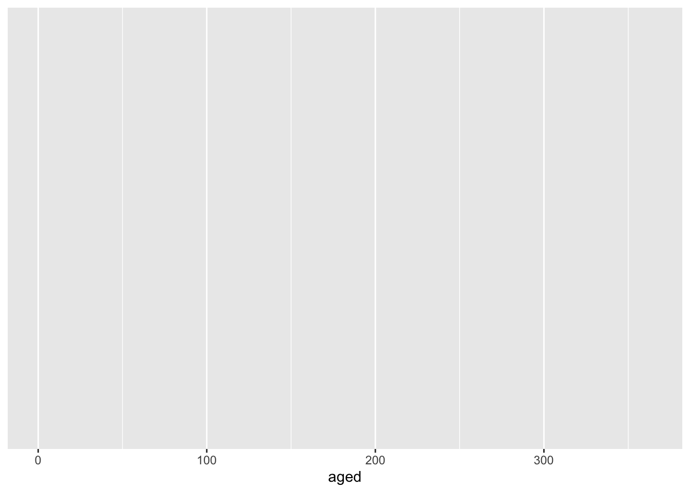
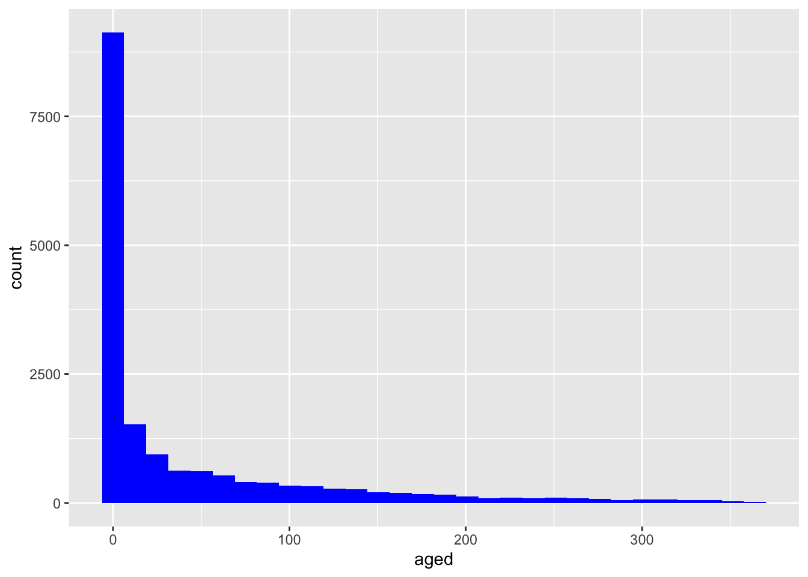
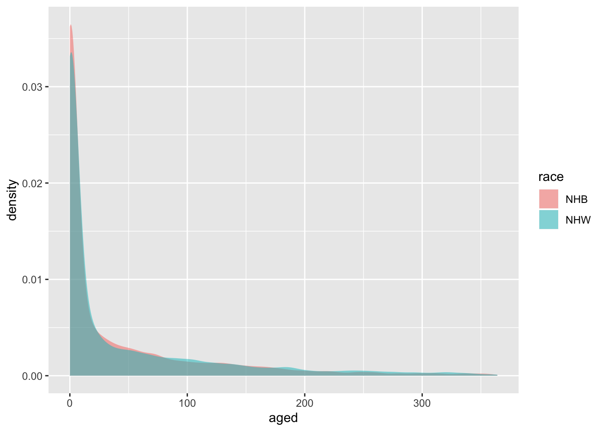
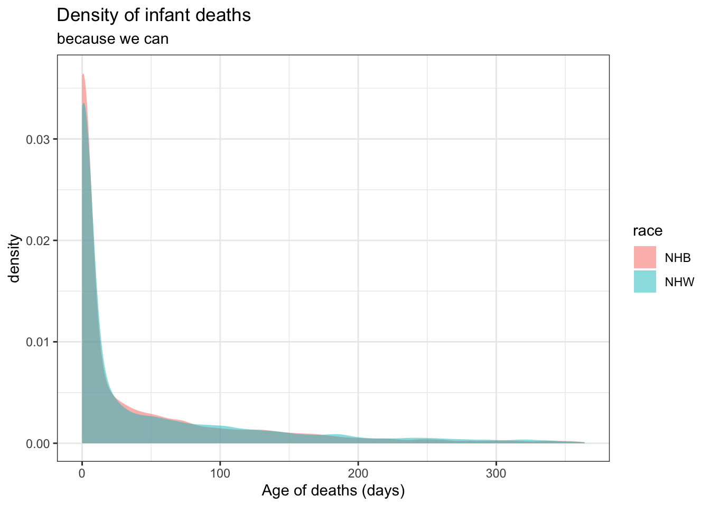
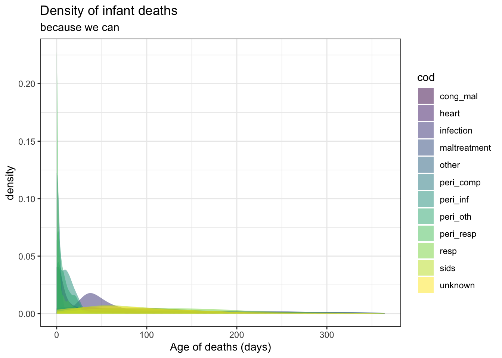
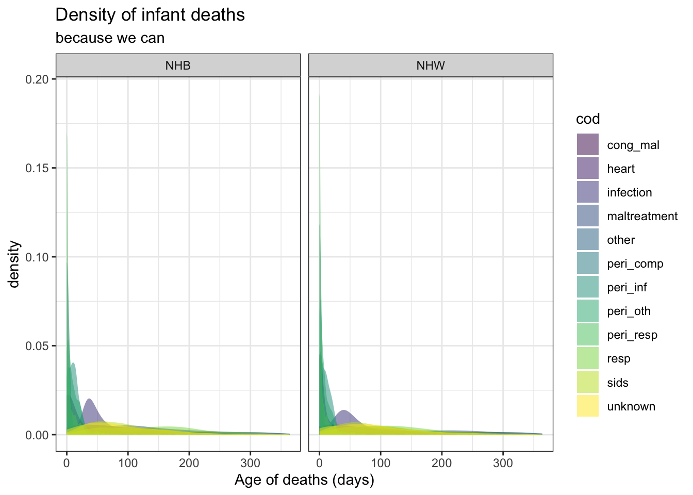
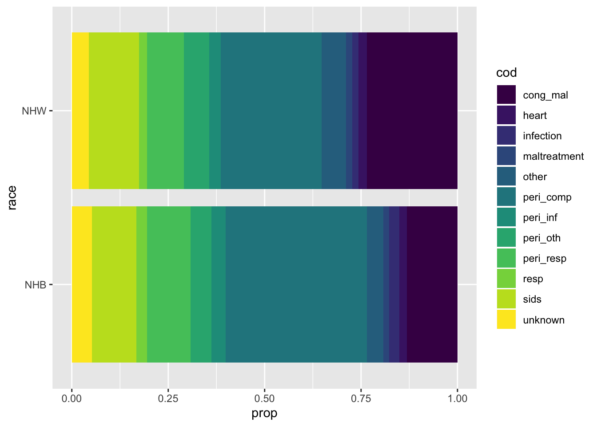
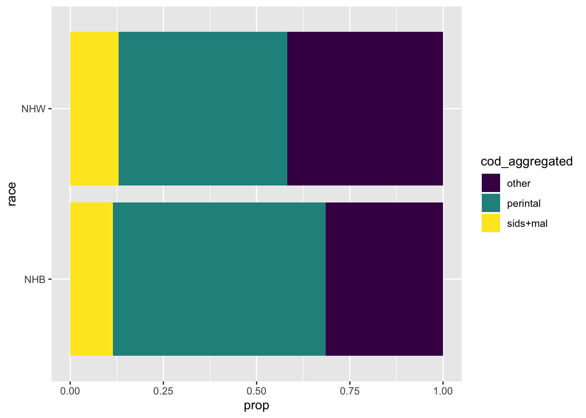

2 Lab - Getting started
This chapter was written with Monica Alexander.
Required reading
- Bryan, Jennifer and Jim Hester, 2020, ‘What they Forgot to Teach You About R’, Chapters 1 to 5, freely available at: https://rstats.wtf/debugging-r-code.html.
- Wickham, Hadley, and Garrett Grolemund, 2017, ‘R for Data Science’, Chapters 4, 5, 6, 8 and 18, freely available at: https://r4ds.had.co.nz/.
Alternative reading
There are a lot of great alternative ‘getting started with R’ type materials. Depending on your background and interests you may find some of the following useful:
- Arnold, Taylor, and Lauren Tilton, 2015, ‘Humanities Data in R’, Springer, Chapters 1 to 5.
- Hall, Megan, 2019, ‘An Introduction to R With Hockey Data’, freely available at: https://hockey-graphs.com/2019/12/11/an-introduction-to-r-with-hockey-data/.
- Hanretty, Chris, 2020, ‘ConveRt’, slides freely available at: http://chrishanretty.co.uk/conveRt/#1.
- Phillips, Nathaniel D., 2018, ‘YaRrr! The Pirate’s Guide to R’, Chapter 2, freely available at: https://bookdown.org/ndphillips/YaRrr/started.html.
Key libraries
ggplot2heretidyverse
Key functions
pivot_wider()pivot_longer()%>%‘pipe’select()filter()arrange()mutate()summarise()group_by()ungroup()arrange()geom_density()geom_histogram()geom_point()facet_wrap()case_when()
Pre-quiz
- In your own words, what is data science?
- What do you see is the role of causality in data science?
- Imagine that you have a job in which including race as an explanatory variable improves the performance of your model. What types of issues would you consider when deciding whether to include this variable in production? What if the variable was sexuality?
- What role do you see for reproducibility in data science? How about replicability?
2.1 Introduction
This chapter is the basics of using R. Some of it may not make sense at first, but these are commands that we will come back to throughout these notes. You should initially just go through this chapter quickly, noting aspects that you don’t understand. Then start to play around with some of the initial case studies. Then maybe come back to this chapter. That way you will see how the various bits fit into context, and hopefully be more motivated to pick up various aspects. We will come back to everything in this chapter in more detail at some point in these notes.
R is an open source language that is useful for statistical programming
You can download R for free here: http://cran.utstat.utoronto.ca/, and you can download R Studio Desktop for free here: https://rstudio.com/products/rstudio/download/#download.
When you are using R you will run into trouble at some point. To work through that trouble:
- Look at the help file for the function by putting ? before the function e.g.
?pivot_wider. - Check the class of your data, by
class(data_set$data_column). - Check for typos.
- Google the error.
- Google what you are trying to do.
- Restart R (
Session->Restart R and Clear Output). - Try to make a small example and see if you have the same issues.
- Restart your computer.
The general workflow that we will use involves:
- Import
- Tidy
- Transforming, descriptive
- Plot
- Model
- Repeat 3/4
2.2 Tidyverse
Tidy data has the following features:
- each variable has its own column
- each observation has its own row
- each value has its own cell
Let’s start by reading in some packages that will help (don’t worry too much about what they are doing for now).
Here we are going to read in a dataset about age specific mortality by year.
## Parsed with column specification:
## cols(
## Year = col_double(),
## Age = col_character(),
## Female = col_character(),
## Male = col_character(),
## Total = col_character()
## )## # A tibble: 6 x 5
## Year Age Female Male Total
## <dbl> <chr> <chr> <chr> <chr>
## 1 1921 0 0.105821 0.138250 0.122259
## 2 1921 1 0.015593 0.017806 0.016710
## 3 1921 2 0.007409 0.008521 0.007970
## 4 1921 3 0.005442 0.006111 0.005779
## 5 1921 4 0.004563 0.004745 0.004655
## 6 1921 5 0.003433 0.003828 0.003633How do we get there? The pivot_longer and pivot_wider functions. Notice that the function has a bunch of arguments. You can find out more about the arguments by looking at the function’s help file: ?pivot_longer.
mortality_data <- pivot_longer(data = mortality_data,
cols = Female:Total,
names_to = "sex",
values_to = "rate")
mortality_data## # A tibble: 30,303 x 4
## Year Age sex rate
## <dbl> <chr> <chr> <chr>
## 1 1921 0 Female 0.105821
## 2 1921 0 Male 0.138250
## 3 1921 0 Total 0.122259
## 4 1921 1 Female 0.015593
## 5 1921 1 Male 0.017806
## 6 1921 1 Total 0.016710
## 7 1921 2 Female 0.007409
## 8 1921 2 Male 0.008521
## 9 1921 2 Total 0.007970
## 10 1921 3 Female 0.005442
## # … with 30,293 more rowsWe will now cover the pipe and six functions that are useful to know and that we will use all the time:
selectfilterarrangemutatesummarise(summarize)group_by
2.2.1 The pipe
One key tidyverse helper is the ‘pipe’: %>%. Read it as “and then” (Mac shortcut: Cmd+Shft+M). This takes the output of a line of code and uses it as an input to the next line of code. You don’t have to use it, but it tends to make your code more readable.
The idea of the pipe is that you take your dataset and then you do stuff
## # A tibble: 6 x 8
## sex aged race gest ucod cod mom_age mom_age_group
## <chr> <dbl> <chr> <dbl> <chr> <chr> <dbl> <fct>
## 1 F 0 NHW 27 P832 peri_oth 30 30
## 2 M 0 NHW 36 Q913 cong_mal 32 30
## 3 M 8 NHW 44 P360 peri_inf 25 25
## 4 F 0 NHB 21 P072 peri_comp 29 25
## 5 M 8 NHB 26 P220 peri_resp 23 20
## 6 M 17 NHW 39 Q249 cong_mal 34 302.2.2 Select
Select is selecting a column. Get cod
## # A tibble: 17,169 x 1
## cod
## <chr>
## 1 peri_oth
## 2 cong_mal
## 3 peri_inf
## 4 peri_comp
## 5 peri_resp
## 6 cong_mal
## 7 peri_inf
## 8 sids
## 9 cong_mal
## 10 cong_mal
## # … with 17,159 more rowsThis is (almost) equivalent to the dollar sign:
## [1] "peri_oth" "cong_mal" "peri_inf" "peri_comp" "peri_resp" "cong_mal"You can get a vector from select by using pull
## [1] "peri_oth" "cong_mal" "peri_inf" "peri_comp" "peri_resp" "cong_mal"You can also use select to get rid of columns:
## # A tibble: 17,169 x 7
## sex aged race gest ucod mom_age mom_age_group
## <chr> <dbl> <chr> <dbl> <chr> <dbl> <fct>
## 1 F 0 NHW 27 P832 30 30
## 2 M 0 NHW 36 Q913 32 30
## 3 M 8 NHW 44 P360 25 25
## 4 F 0 NHB 21 P072 29 25
## 5 M 8 NHB 26 P220 23 20
## 6 M 17 NHW 39 Q249 34 30
## 7 F 10 NHB 26 P369 27 25
## 8 F 75 NHB 40 W84 24 20
## 9 M 89 NHB 36 Q913 39 35
## 10 M 76 NHB 39 Q234 30 30
## # … with 17,159 more rows2.2.3 Filter
Filter allows you to select rows. Filter all males:
## # A tibble: 9,669 x 8
## sex aged race gest ucod cod mom_age mom_age_group
## <chr> <dbl> <chr> <dbl> <chr> <chr> <dbl> <fct>
## 1 M 0 NHW 36 Q913 cong_mal 32 30
## 2 M 8 NHW 44 P360 peri_inf 25 25
## 3 M 8 NHB 26 P220 peri_resp 23 20
## 4 M 17 NHW 39 Q249 cong_mal 34 30
## 5 M 89 NHB 36 Q913 cong_mal 39 35
## 6 M 76 NHB 39 Q234 cong_mal 30 30
## 7 M 123 NHB 30 R95 sids 21 20
## 8 M 205 NHW 39 R090 other 33 30
## 9 M 0 NHW 28 P290 peri_resp 31 30
## 10 M 29 NHB 39 J189 resp 22 20
## # … with 9,659 more rowsTwo conditions: male babies who died of SIDS (AND)
## # A tibble: 1,264 x 8
## sex aged race gest ucod cod mom_age mom_age_group
## <chr> <dbl> <chr> <dbl> <chr> <chr> <dbl> <fct>
## 1 M 123 NHB 30 R95 sids 21 20
## 2 M 30 NHB 34 R95 sids 24 20
## 3 M 3 NHW 44 R95 sids 32 30
## 4 M 71 NHW 37 R95 sids 41 40
## 5 M 52 NHB 38 R95 sids 31 30
## 6 M 86 NHW 38 R95 sids 40 40
## 7 M 108 NHW 40 W75 sids 32 30
## 8 M 42 NHB 39 W76 sids 27 25
## 9 M 250 NHW 38 R95 sids 34 30
## 10 M 167 NHB 39 W78 sids 20 20
## # … with 1,254 more rowsTwo conditions: male babies OR babies who died of SIDS
## # A tibble: 10,534 x 8
## sex aged race gest ucod cod mom_age mom_age_group
## <chr> <dbl> <chr> <dbl> <chr> <chr> <dbl> <fct>
## 1 M 0 NHW 36 Q913 cong_mal 32 30
## 2 M 8 NHW 44 P360 peri_inf 25 25
## 3 M 8 NHB 26 P220 peri_resp 23 20
## 4 M 17 NHW 39 Q249 cong_mal 34 30
## 5 F 75 NHB 40 W84 sids 24 20
## 6 M 89 NHB 36 Q913 cong_mal 39 35
## 7 M 76 NHB 39 Q234 cong_mal 30 30
## 8 M 123 NHB 30 R95 sids 21 20
## 9 M 205 NHW 39 R090 other 33 30
## 10 M 0 NHW 28 P290 peri_resp 31 30
## # … with 10,524 more rowsBuild these up: using with select.
## # A tibble: 1,264 x 1
## aged
## <dbl>
## 1 123
## 2 30
## 3 3
## 4 71
## 5 52
## 6 86
## 7 108
## 8 42
## 9 250
## 10 167
## # … with 1,254 more rows& is the same as ,
## # A tibble: 1,264 x 8
## sex aged race gest ucod cod mom_age mom_age_group
## <chr> <dbl> <chr> <dbl> <chr> <chr> <dbl> <fct>
## 1 M 123 NHB 30 R95 sids 21 20
## 2 M 30 NHB 34 R95 sids 24 20
## 3 M 3 NHW 44 R95 sids 32 30
## 4 M 71 NHW 37 R95 sids 41 40
## 5 M 52 NHB 38 R95 sids 31 30
## 6 M 86 NHW 38 R95 sids 40 40
## 7 M 108 NHW 40 W75 sids 32 30
## 8 M 42 NHB 39 W76 sids 27 25
## 9 M 250 NHW 38 R95 sids 34 30
## 10 M 167 NHB 39 W78 sids 20 20
## # … with 1,254 more rowsFilter a particular row (row 3):
## # A tibble: 1 x 8
## sex aged race gest ucod cod mom_age mom_age_group
## <chr> <dbl> <chr> <dbl> <chr> <chr> <dbl> <fct>
## 1 M 8 NHW 44 P360 peri_inf 25 252.2.4 Arrange
arrange is ordering data.
Arrange by aged
## # A tibble: 17,169 x 8
## sex aged race gest ucod cod mom_age mom_age_group
## <chr> <dbl> <chr> <dbl> <chr> <chr> <dbl> <fct>
## 1 F 0 NHW 27 P832 peri_oth 30 30
## 2 M 0 NHW 36 Q913 cong_mal 32 30
## 3 F 0 NHB 21 P072 peri_comp 29 25
## 4 F 0 NHB 33 Q042 cong_mal 25 25
## 5 M 0 NHW 28 P290 peri_resp 31 30
## 6 F 0 NHB 24 P832 peri_oth 22 20
## 7 F 0 NHW 37 Q039 cong_mal 18 15
## 8 F 0 NHW 26 P072 peri_comp 34 30
## 9 F 0 NHW 38 Q042 cong_mal 24 20
## 10 F 0 NHB 36 Q000 cong_mal 18 15
## # … with 17,159 more rowsArrange in descending order
## # A tibble: 17,169 x 8
## sex aged race gest ucod cod mom_age mom_age_group
## <chr> <dbl> <chr> <dbl> <chr> <chr> <dbl> <fct>
## 1 F 364 NHW 41 V877 other 19 15
## 2 F 364 NHW 37 V892 other 17 15
## 3 M 364 NHW 40 V892 other 31 30
## 4 M 363 NHB 37 W73 sids 24 20
## 5 M 363 NHW 32 Q249 cong_mal 33 30
## 6 F 363 NHW 39 A403 infection 37 35
## 7 M 363 NHW 35 G409 other 22 20
## 8 M 363 NHW 35 Q249 cong_mal 18 15
## 9 F 363 NHW 39 Y09 maltreatment 31 30
## 10 M 362 NHW 40 A499 infection 27 25
## # … with 17,159 more rowsArrange by multiple things (age of death and age of mom)
## # A tibble: 17,169 x 8
## sex aged race gest ucod cod mom_age mom_age_group
## <chr> <dbl> <chr> <dbl> <chr> <chr> <dbl> <fct>
## 1 F 0 NHB 23 P039 peri_comp 14 <NA>
## 2 M 0 NHB 24 P015 peri_comp 14 <NA>
## 3 M 0 NHB 21 P072 peri_comp 14 <NA>
## 4 M 0 NHW 23 P072 peri_comp 14 <NA>
## 5 M 0 NHB 99 Y08 maltreatment 14 <NA>
## 6 M 0 NHW 22 P072 peri_comp 14 <NA>
## 7 M 0 NHW 24 P072 peri_comp 14 <NA>
## 8 F 0 NHW 34 P073 peri_comp 14 <NA>
## 9 F 0 NHB 19 P073 peri_comp 14 <NA>
## 10 M 0 NHW 99 R99 unknown 14 <NA>
## # … with 17,159 more rowsWhat happens if we do two arranges:
## # A tibble: 17,169 x 8
## sex aged race gest ucod cod mom_age mom_age_group
## <chr> <dbl> <chr> <dbl> <chr> <chr> <dbl> <fct>
## 1 F 0 NHB 23 P039 peri_comp 14 <NA>
## 2 M 0 NHB 24 P015 peri_comp 14 <NA>
## 3 M 0 NHB 21 P072 peri_comp 14 <NA>
## 4 M 0 NHW 23 P072 peri_comp 14 <NA>
## 5 M 0 NHB 99 Y08 maltreatment 14 <NA>
## 6 M 0 NHW 22 P072 peri_comp 14 <NA>
## 7 M 0 NHW 24 P072 peri_comp 14 <NA>
## 8 F 0 NHW 34 P073 peri_comp 14 <NA>
## 9 F 0 NHB 19 P073 peri_comp 14 <NA>
## 10 M 0 NHW 99 R99 unknown 14 <NA>
## # … with 17,159 more rowsSame as
## # A tibble: 17,169 x 8
## sex aged race gest ucod cod mom_age mom_age_group
## <chr> <dbl> <chr> <dbl> <chr> <chr> <dbl> <fct>
## 1 F 0 NHB 23 P039 peri_comp 14 <NA>
## 2 M 0 NHB 24 P015 peri_comp 14 <NA>
## 3 M 0 NHB 21 P072 peri_comp 14 <NA>
## 4 M 0 NHW 23 P072 peri_comp 14 <NA>
## 5 M 0 NHB 99 Y08 maltreatment 14 <NA>
## 6 M 0 NHW 22 P072 peri_comp 14 <NA>
## 7 M 0 NHW 24 P072 peri_comp 14 <NA>
## 8 F 0 NHW 34 P073 peri_comp 14 <NA>
## 9 F 0 NHB 19 P073 peri_comp 14 <NA>
## 10 M 0 NHW 99 R99 unknown 14 <NA>
## # … with 17,159 more rows2.2.5 group_by
We might want to arrange by age of death within the sex group
## # A tibble: 17,169 x 8
## # Groups: sex [2]
## sex aged race gest ucod cod mom_age mom_age_group
## <chr> <dbl> <chr> <dbl> <chr> <chr> <dbl> <fct>
## 1 F 0 NHW 27 P832 peri_oth 30 30
## 2 M 0 NHW 36 Q913 cong_mal 32 30
## 3 F 0 NHB 21 P072 peri_comp 29 25
## 4 F 0 NHB 33 Q042 cong_mal 25 25
## 5 M 0 NHW 28 P290 peri_resp 31 30
## 6 F 0 NHB 24 P832 peri_oth 22 20
## 7 F 0 NHW 37 Q039 cong_mal 18 15
## 8 F 0 NHW 26 P072 peri_comp 34 30
## 9 F 0 NHW 38 Q042 cong_mal 24 20
## 10 F 0 NHB 36 Q000 cong_mal 18 15
## # … with 17,159 more rowsSay we want to arrange by aged of death, and then get the third row
## # A tibble: 1 x 8
## sex aged race gest ucod cod mom_age mom_age_group
## <chr> <dbl> <chr> <dbl> <chr> <chr> <dbl> <fct>
## 1 F 0 NHB 21 P072 peri_comp 29 25If we wanted to do this by sex of baby:
## # A tibble: 2 x 8
## # Groups: sex [2]
## sex aged race gest ucod cod mom_age mom_age_group
## <chr> <dbl> <chr> <dbl> <chr> <chr> <dbl> <fct>
## 1 F 0 NHB 33 Q042 cong_mal 25 25
## 2 M 0 NHB 19 P072 peri_comp 24 20We could group by sex, arrange by age of death, and then get the first 3 rows:
## # A tibble: 6 x 8
## # Groups: sex [2]
## sex aged race gest ucod cod mom_age mom_age_group
## <chr> <dbl> <chr> <dbl> <chr> <chr> <dbl> <fct>
## 1 F 0 NHW 27 P832 peri_oth 30 30
## 2 M 0 NHW 36 Q913 cong_mal 32 30
## 3 F 0 NHB 21 P072 peri_comp 29 25
## 4 F 0 NHB 33 Q042 cong_mal 25 25
## 5 M 0 NHW 28 P290 peri_resp 31 30
## 6 M 0 NHB 19 P072 peri_comp 24 20Equivalently:
## # A tibble: 6 x 8
## # Groups: sex [2]
## sex aged race gest ucod cod mom_age mom_age_group
## <chr> <dbl> <chr> <dbl> <chr> <chr> <dbl> <fct>
## 1 F 0 NHW 27 P832 peri_oth 30 30
## 2 F 0 NHB 21 P072 peri_comp 29 25
## 3 F 0 NHB 33 Q042 cong_mal 25 25
## 4 M 0 NHW 36 Q913 cong_mal 32 30
## 5 M 0 NHW 28 P290 peri_resp 31 30
## 6 M 0 NHB 19 P072 peri_comp 24 202.2.6 Mutate
The mutate function is used when you want to make a new variable.
Firstly, let’s change gest to days
## # A tibble: 6 x 9
## sex aged race gest ucod cod mom_age mom_age_group gest_days
## <chr> <dbl> <chr> <dbl> <chr> <chr> <dbl> <fct> <dbl>
## 1 F 0 NHW 27 P832 peri_oth 30 30 189
## 2 M 0 NHW 36 Q913 cong_mal 32 30 252
## 3 M 8 NHW 44 P360 peri_inf 25 25 308
## 4 F 0 NHB 21 P072 peri_comp 29 25 147
## 5 M 8 NHB 26 P220 peri_resp 23 20 182
## 6 M 17 NHW 39 Q249 cong_mal 34 30 273Now, let’s make a new variable that is total days in existence (aged+ gest_days)
## # A tibble: 17,169 x 10
## sex aged race gest ucod cod mom_age mom_age_group gest_days tot_life
## <chr> <dbl> <chr> <dbl> <chr> <chr> <dbl> <fct> <dbl> <dbl>
## 1 F 0 NHW 27 P832 peri_… 30 30 189 189
## 2 M 0 NHW 36 Q913 cong_… 32 30 252 252
## 3 M 8 NHW 44 P360 peri_… 25 25 308 316
## 4 F 0 NHB 21 P072 peri_… 29 25 147 147
## 5 M 8 NHB 26 P220 peri_… 23 20 182 190
## 6 M 17 NHW 39 Q249 cong_… 34 30 273 290
## 7 F 10 NHB 26 P369 peri_… 27 25 182 192
## 8 F 75 NHB 40 W84 sids 24 20 280 355
## 9 M 89 NHB 36 Q913 cong_… 39 35 252 341
## 10 M 76 NHB 39 Q234 cong_… 30 30 273 349
## # … with 17,159 more rows2.2.7 Summarise
summarise = new summary variables
Let’s look at maximum of mom_age
## # A tibble: 1 x 1
## max_mom_age
## <dbl>
## 1 50Check:
## # A tibble: 17,169 x 9
## sex aged race gest ucod cod mom_age mom_age_group gest_days
## <chr> <dbl> <chr> <dbl> <chr> <chr> <dbl> <fct> <dbl>
## 1 M 9 NHB 34 Q999 cong_mal 50 45 238
## 2 M 65 NHW 32 I514 heart 50 45 224
## 3 M 2 NHB 45 P293 peri_resp 50 45 315
## 4 M 87 NHW 30 A090 infection 49 45 210
## 5 M 13 NHB 27 P912 peri_oth 49 45 189
## 6 F 0 NHW 24 P220 peri_resp 48 45 168
## 7 F 41 NHB 27 A090 infection 48 45 189
## 8 F 9 NHW 26 P280 peri_resp 48 45 182
## 9 F 88 NHB 35 Q210 cong_mal 48 45 245
## 10 F 123 NHW 41 Q913 cong_mal 47 45 287
## # … with 17,159 more rowsSummarise is particularly powerful in conjunction with group_by.
Let’s look at the maximum of mom age by cod
## # A tibble: 12 x 2
## cod max_mom_age
## <chr> <dbl>
## 1 cong_mal 50
## 2 heart 50
## 3 infection 49
## 4 maltreatment 38
## 5 other 46
## 6 peri_comp 47
## 7 peri_inf 44
## 8 peri_oth 49
## 9 peri_resp 50
## 10 resp 44
## 11 sids 44
## 12 unknown 45Let’s look at mean of age at death by cod
infant_mortality %>%
group_by(cod) %>%
summarise(mean_age_of_death = round(mean(aged), 2)) %>%
arrange(-mean_age_of_death)## # A tibble: 12 x 2
## cod mean_age_of_death
## <chr> <dbl>
## 1 maltreatment 143.
## 2 resp 136.
## 3 other 112.
## 4 sids 102.
## 5 heart 101.
## 6 unknown 97.2
## 7 infection 74.0
## 8 cong_mal 39.0
## 9 peri_resp 12.2
## 10 peri_inf 12.2
## 11 peri_oth 11.5
## 12 peri_comp 2.68We can group by and summarise for multiple groups at a time:
mean age of death by cod and race of mother
infant_mortality %>%
group_by(cod, race) %>%
summarise(mean_age_of_death = round(mean(aged), 2)) %>%
arrange(-mean_age_of_death, race)## # A tibble: 24 x 3
## # Groups: cod [12]
## cod race mean_age_of_death
## <chr> <chr> <dbl>
## 1 resp NHB 146.
## 2 maltreatment NHB 146.
## 3 maltreatment NHW 141.
## 4 resp NHW 128.
## 5 other NHW 113.
## 6 other NHB 108.
## 7 sids NHW 104.
## 8 heart NHB 104
## 9 heart NHW 99.9
## 10 sids NHB 99.4
## # … with 14 more rows2.2.8 Counting by group
Number of deaths by cod.
## # A tibble: 12 x 2
## # Groups: cod [12]
## cod n
## <chr> <int>
## 1 cong_mal 3368
## 2 heart 353
## 3 infection 344
## 4 maltreatment 266
## 5 other 953
## 6 peri_comp 5168
## 7 peri_inf 561
## 8 peri_oth 1057
## 9 peri_resp 1746
## 10 resp 412
## 11 sids 2129
## 12 unknown 8122.2.9 Calculate proportions
Often calculating proportions is a combination of summarise and mutate (and group by).
Let’s calculate the proportion of deaths by cause. We’re using count here, but it’s sort of like summarise.
Note here, that we needed to ungroup() the data before mutating.
## # A tibble: 12 x 3
## cod n prop
## <chr> <int> <dbl>
## 1 cong_mal 3368 0.196
## 2 heart 353 0.0206
## 3 infection 344 0.0200
## 4 maltreatment 266 0.0155
## 5 other 953 0.0555
## 6 peri_comp 5168 0.301
## 7 peri_inf 561 0.0327
## 8 peri_oth 1057 0.0616
## 9 peri_resp 1746 0.102
## 10 resp 412 0.0240
## 11 sids 2129 0.124
## 12 unknown 812 0.0473Highlight difference between mutate and summarise. Let’s get the maximum age of death by cod group
## # A tibble: 12 x 2
## cod max_age_death
## <chr> <dbl>
## 1 cong_mal 363
## 2 heart 354
## 3 infection 363
## 4 maltreatment 363
## 5 other 364
## 6 peri_comp 345
## 7 peri_inf 152
## 8 peri_oth 357
## 9 peri_resp 357
## 10 resp 362
## 11 sids 363
## 12 unknown 357Could also do this as a mutate:
## # A tibble: 17,169 x 10
## # Groups: cod [12]
## sex aged race gest ucod cod mom_age mom_age_group gest_days
## <chr> <dbl> <chr> <dbl> <chr> <chr> <dbl> <fct> <dbl>
## 1 M 0 NHW 36 Q913 cong… 32 30 252
## 2 M 17 NHW 39 Q249 cong… 34 30 273
## 3 M 89 NHB 36 Q913 cong… 39 35 252
## 4 M 76 NHB 39 Q234 cong… 30 30 273
## 5 F 0 NHB 33 Q042 cong… 25 25 231
## 6 F 0 NHW 37 Q039 cong… 18 15 259
## 7 M 51 NHW 38 Q917 cong… 20 20 266
## 8 F 0 NHW 38 Q042 cong… 24 20 266
## 9 F 0 NHB 36 Q000 cong… 18 15 252
## 10 M 0 NHW 18 Q909 cong… 40 40 126
## # … with 17,159 more rows, and 1 more variable: max_age_death <dbl>Could be useful: use this as an intermediate step to get a new variable that is looking at age of death reelative to the maximum
infant_mortality %>%
group_by(cod) %>%
mutate(max_age_death = max(aged)) %>%
mutate(frac_max = aged/max_age_death)## # A tibble: 17,169 x 11
## # Groups: cod [12]
## sex aged race gest ucod cod mom_age mom_age_group gest_days
## <chr> <dbl> <chr> <dbl> <chr> <chr> <dbl> <fct> <dbl>
## 1 F 0 NHW 27 P832 peri… 30 30 189
## 2 M 0 NHW 36 Q913 cong… 32 30 252
## 3 M 8 NHW 44 P360 peri… 25 25 308
## 4 F 0 NHB 21 P072 peri… 29 25 147
## 5 M 8 NHB 26 P220 peri… 23 20 182
## 6 M 17 NHW 39 Q249 cong… 34 30 273
## 7 F 10 NHB 26 P369 peri… 27 25 182
## 8 F 75 NHB 40 W84 sids 24 20 280
## 9 M 89 NHB 36 Q913 cong… 39 35 252
## 10 M 76 NHB 39 Q234 cong… 30 30 273
## # … with 17,159 more rows, and 2 more variables: max_age_death <dbl>,
## # frac_max <dbl>2.3 ggplot
The ggplot package is the plotting package that is part of the tidyverse.
In a similar way to piping, it works in layers. But instead of using the pipe (%>%) ggplot uses +.
2.3.1 Main features
- data
- aesthetics / mapping
- type (
geom)
Let’s build up a histogram of age of death with increasing complexity.
Starts with a grey box:

We need to tell it what we want to plot. This is where geom comes in
## `stat_bin()` using `bins = 30`. Pick better value with `binwidth`.
Let’s look at the histograms by race. This is an aesthetic.
ggplot(data = infant_mortality, mapping = aes(x = aged, fill = race)) +
geom_density(alpha = 0.5, color = NA)
Make it prettier?
ggplot(data = infant_mortality, mapping = aes(x = aged, fill = race)) +
geom_density(alpha = 0.5, color = NA) +
labs(x = "Age of deaths (days)",
title = "Density of infant deaths",
subtitle = "because we can") +
theme_bw()
Change the color
ggplot(data = infant_mortality, mapping = aes(x = aged, fill = cod)) +
geom_density(alpha = 0.5, color = NA) +
labs(x = "Age of deaths (days)",
title = "Density of infant deaths",
subtitle = "because we can") +
theme_bw() +
scale_fill_viridis_d()
2.3.2 Facets
Facets == subplots
ggplot(data = infant_mortality, mapping = aes(x = aged, fill = cod)) +
geom_density(alpha = 0.5, color = NA) +
labs(x = "Age of deaths (days)",
title = "Density of infant deaths",
subtitle = "because we can") +
theme_bw() +
scale_fill_viridis_d() +
facet_wrap(~race)
2.3.3 Small things
- You can pipe data into ggplot
infant_mortality %>%
group_by(cod, race) %>%
summarise(n = n()) %>%
group_by(race) %>%
mutate(prop = n/sum(n)) %>%
ggplot(aes(x = race, y = prop, fill = cod)) +
geom_bar(stat = "identity") +
coord_flip() +
scale_fill_viridis_d()
2.4 Other
2.4.1 case_when
This graph above has a lot of categories. Let’s change this into:
- perinatal
- sid + maltreat
- everything else
Use case_when
infant_mortality %>%
mutate(cod_aggregated = case_when(
str_starts(cod, "peri") ~ "perintal",
cod=="sids"|cod=="matreatment" ~ "sids+mal",
TRUE ~ "other"
)) %>%
group_by(cod_aggregated, race) %>%
summarise(n = n()) %>%
group_by(race) %>%
mutate(prop = n/sum(n)) %>%
ggplot(aes(x = race, y = prop, fill = cod_aggregated)) +
geom_bar(stat = "identity") +
coord_flip() +
scale_fill_viridis_d()